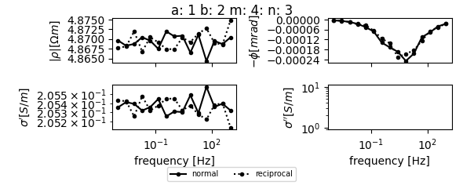
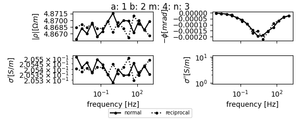
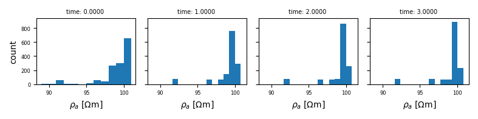

Note
Click here to download the full example code
Visualizing multi-dimensional sEIT data¶
This is work in progress
imports
import reda
load the data set
seit = reda.sEIT()
for nr in range(0, 4):
seit.import_crtomo(
directory='data_synthetic_4d/modV_0{}_noisy/'.format(nr),
timestep=nr
)
seit.compute_K_analytical(spacing=1)
Out:
Summary:
a b ... frequency rpha
count 21090.000000 21090.000000 ... 21090.000000 21090.000000
mean 20.000000 21.000000 ... 106.285593 -0.416545
std 11.269695 11.269695 ... 257.160101 3.894778
min 1.000000 2.000000 ... 0.001000 -36.449777
25% 10.000000 11.000000 ... 0.019307 0.001337
50% 20.000000 21.000000 ... 1.000000 0.152537
75% 30.000000 31.000000 ... 51.794747 0.904502
max 39.000000 40.000000 ... 1000.000000 9.153910
[8 rows x 7 columns]
Summary:
a b ... frequency rpha
count 21090.000000 21090.000000 ... 21090.000000 21090.000000
mean 20.000000 21.000000 ... 106.285593 -0.271940
std 11.269695 11.269695 ... 257.160101 0.695746
min 1.000000 2.000000 ... 0.001000 -4.414486
25% 10.000000 11.000000 ... 0.019307 -0.263819
50% 20.000000 21.000000 ... 1.000000 0.001008
75% 30.000000 31.000000 ... 51.794747 0.042757
max 39.000000 40.000000 ... 1000.000000 0.547236
[8 rows x 7 columns]
Summary:
a b ... frequency rpha
count 21090.000000 21090.000000 ... 21090.000000 21090.000000
mean 20.000000 21.000000 ... 106.285593 -0.146598
std 11.269695 11.269695 ... 257.160101 0.262500
min 1.000000 2.000000 ... 0.001000 -1.449444
25% 10.000000 11.000000 ... 0.019307 -0.188202
50% 20.000000 21.000000 ... 1.000000 -0.020179
75% 30.000000 31.000000 ... 51.794747 0.002784
max 39.000000 40.000000 ... 1000.000000 0.151707
[8 rows x 7 columns]
Summary:
a b ... frequency rpha
count 21090.000000 21090.000000 ... 21090.000000 21090.000000
mean 20.000000 21.000000 ... 106.285593 -0.073887
std 11.269695 11.269695 ... 257.160101 0.130434
min 1.000000 2.000000 ... 0.001000 -0.711277
25% 10.000000 11.000000 ... 0.019307 -0.095615
50% 20.000000 21.000000 ... 1.000000 -0.007987
75% 30.000000 31.000000 ... 51.794747 0.001270
max 39.000000 40.000000 ... 1000.000000 0.051985
[8 rows x 7 columns]
Plotting pseudosections
with reda.CreateEnterDirectory('output_visualize_4d'):
pass
print(
'at this point the plotting routines do not honor'
' timestep dimensionality'
)
Out:
at this point the plotting routines do not honor timestep dimensionality
Plot a single spectrum
nor, rec = seit.get_spectrum(abmn=[1, 2, 4, 3])
with reda.CreateEnterDirectory('output_visualize_4d'):
for timestep, spectrum in nor.items():
spectrum.plot(filename='spectrum_1-2_4-3_ts_{}.png'.format(timestep))
with reda.CreateEnterDirectory('output_visualize_4d'):
nor, rec, fig = seit.get_spectrum(
abmn=[1, 2, 4, 3], plot_filename='specplot.png'
)
- 
- 


Out:
/home/travis/virtualenv/python3.9.12/lib/python3.9/site-packages/reda/eis/plots.py:217: UserWarning: Data has no positive values, and therefore cannot be log-scaled.
ax.set_ylim(
/home/travis/virtualenv/python3.9.12/lib/python3.9/site-packages/reda/eis/plots.py:217: UserWarning: Data has no positive values, and therefore cannot be log-scaled.
ax.set_ylim(
/home/travis/virtualenv/python3.9.12/lib/python3.9/site-packages/reda/eis/plots.py:217: UserWarning: Data has no positive values, and therefore cannot be log-scaled.
ax.set_ylim(
/home/travis/virtualenv/python3.9.12/lib/python3.9/site-packages/reda/eis/plots.py:217: UserWarning: Data has no positive values, and therefore cannot be log-scaled.
ax.set_ylim(
/home/travis/virtualenv/python3.9.12/lib/python3.9/site-packages/reda/eis/plots.py:217: UserWarning: Data has no positive values, and therefore cannot be log-scaled.
ax.set_ylim(
/home/travis/virtualenv/python3.9.12/lib/python3.9/site-packages/reda/eis/plots.py:235: UserWarning: linestyle is redundantly defined by the 'linestyle' keyword argument and the fmt string ".-" (-> linestyle='-'). The keyword argument will take precedence.
axes[0, 0].semilogx(
/home/travis/virtualenv/python3.9.12/lib/python3.9/site-packages/reda/eis/plots.py:250: UserWarning: linestyle is redundantly defined by the 'linestyle' keyword argument and the fmt string ".-" (-> linestyle='-'). The keyword argument will take precedence.
axes[0, 1].semilogx(
/home/travis/virtualenv/python3.9.12/lib/python3.9/site-packages/reda/eis/plots.py:265: UserWarning: linestyle is redundantly defined by the 'linestyle' keyword argument and the fmt string ".-" (-> linestyle='-'). The keyword argument will take precedence.
axes[1, 0].loglog(
/home/travis/virtualenv/python3.9.12/lib/python3.9/site-packages/reda/eis/plots.py:279: UserWarning: linestyle is redundantly defined by the 'linestyle' keyword argument and the fmt string ".-" (-> linestyle='-'). The keyword argument will take precedence.
axes[1, 1].loglog(
/home/travis/virtualenv/python3.9.12/lib/python3.9/site-packages/reda/eis/plots.py:288: UserWarning: Data has no positive values, and therefore cannot be log-scaled.
axes[1, 1].set_ylim(
/home/travis/virtualenv/python3.9.12/lib/python3.9/site-packages/reda/eis/plots.py:217: UserWarning: Data has no positive values, and therefore cannot be log-scaled.
ax.set_ylim(
/home/travis/virtualenv/python3.9.12/lib/python3.9/site-packages/reda/eis/plots.py:235: UserWarning: linestyle is redundantly defined by the 'linestyle' keyword argument and the fmt string ".-" (-> linestyle='-'). The keyword argument will take precedence.
axes[0, 0].semilogx(
/home/travis/virtualenv/python3.9.12/lib/python3.9/site-packages/reda/eis/plots.py:250: UserWarning: linestyle is redundantly defined by the 'linestyle' keyword argument and the fmt string ".-" (-> linestyle='-'). The keyword argument will take precedence.
axes[0, 1].semilogx(
/home/travis/virtualenv/python3.9.12/lib/python3.9/site-packages/reda/eis/plots.py:265: UserWarning: linestyle is redundantly defined by the 'linestyle' keyword argument and the fmt string ".-" (-> linestyle='-'). The keyword argument will take precedence.
axes[1, 0].loglog(
/home/travis/virtualenv/python3.9.12/lib/python3.9/site-packages/reda/eis/plots.py:279: UserWarning: linestyle is redundantly defined by the 'linestyle' keyword argument and the fmt string ".-" (-> linestyle='-'). The keyword argument will take precedence.
axes[1, 1].loglog(
/home/travis/virtualenv/python3.9.12/lib/python3.9/site-packages/reda/eis/plots.py:288: UserWarning: Data has no positive values, and therefore cannot be log-scaled.
axes[1, 1].set_ylim(
/home/travis/virtualenv/python3.9.12/lib/python3.9/site-packages/reda/eis/plots.py:217: UserWarning: Data has no positive values, and therefore cannot be log-scaled.
ax.set_ylim(
/home/travis/virtualenv/python3.9.12/lib/python3.9/site-packages/reda/eis/plots.py:235: UserWarning: linestyle is redundantly defined by the 'linestyle' keyword argument and the fmt string ".-" (-> linestyle='-'). The keyword argument will take precedence.
axes[0, 0].semilogx(
/home/travis/virtualenv/python3.9.12/lib/python3.9/site-packages/reda/eis/plots.py:250: UserWarning: linestyle is redundantly defined by the 'linestyle' keyword argument and the fmt string ".-" (-> linestyle='-'). The keyword argument will take precedence.
axes[0, 1].semilogx(
/home/travis/virtualenv/python3.9.12/lib/python3.9/site-packages/reda/eis/plots.py:265: UserWarning: linestyle is redundantly defined by the 'linestyle' keyword argument and the fmt string ".-" (-> linestyle='-'). The keyword argument will take precedence.
axes[1, 0].loglog(
/home/travis/virtualenv/python3.9.12/lib/python3.9/site-packages/reda/eis/plots.py:279: UserWarning: linestyle is redundantly defined by the 'linestyle' keyword argument and the fmt string ".-" (-> linestyle='-'). The keyword argument will take precedence.
axes[1, 1].loglog(
/home/travis/virtualenv/python3.9.12/lib/python3.9/site-packages/reda/eis/plots.py:288: UserWarning: Data has no positive values, and therefore cannot be log-scaled.
axes[1, 1].set_ylim(
/home/travis/virtualenv/python3.9.12/lib/python3.9/site-packages/reda/eis/plots.py:217: UserWarning: Data has no positive values, and therefore cannot be log-scaled.
ax.set_ylim(
/home/travis/virtualenv/python3.9.12/lib/python3.9/site-packages/reda/eis/plots.py:235: UserWarning: linestyle is redundantly defined by the 'linestyle' keyword argument and the fmt string ".-" (-> linestyle='-'). The keyword argument will take precedence.
axes[0, 0].semilogx(
/home/travis/virtualenv/python3.9.12/lib/python3.9/site-packages/reda/eis/plots.py:250: UserWarning: linestyle is redundantly defined by the 'linestyle' keyword argument and the fmt string ".-" (-> linestyle='-'). The keyword argument will take precedence.
axes[0, 1].semilogx(
/home/travis/virtualenv/python3.9.12/lib/python3.9/site-packages/reda/eis/plots.py:265: UserWarning: linestyle is redundantly defined by the 'linestyle' keyword argument and the fmt string ".-" (-> linestyle='-'). The keyword argument will take precedence.
axes[1, 0].loglog(
/home/travis/virtualenv/python3.9.12/lib/python3.9/site-packages/reda/eis/plots.py:279: UserWarning: linestyle is redundantly defined by the 'linestyle' keyword argument and the fmt string ".-" (-> linestyle='-'). The keyword argument will take precedence.
axes[1, 1].loglog(
/home/travis/virtualenv/python3.9.12/lib/python3.9/site-packages/reda/eis/plots.py:288: UserWarning: Data has no positive values, and therefore cannot be log-scaled.
axes[1, 1].set_ylim(
from reda.eis.plots import multi_sip_response
# important: use the obj_dict parameter to use a dict as input
multi = multi_sip_response(obj_dict=nor)
with reda.CreateEnterDirectory('output_visualize_4d'):
multi.plot_cre('multiplot_cre.png')
multi.plot_cim('multiplot_cim.png')
multi.plot_rmag('multiplot_rmag.png')
multi.plot_rpha('multiplot_rpha.png')
Out:
/home/travis/virtualenv/python3.9.12/lib/python3.9/site-packages/reda/eis/plots.py:536: UserWarning: Data has no positive values, and therefore cannot be log-scaled.
ax.set_xlim(*self.xlim)
Histograms just used to close the figures to save memory
import pylab as plt
with reda.CreateEnterDirectory('output_visualize_4d'):
# plot frequencies in one plot
name, figs = seit.plot_histograms('rho_a', 'frequency')
for ts, fig in sorted(figs.items()):
fig.savefig(name + '_lin_{}.jpg'.format(ts), dpi=200)
plt.close(fig)
# plot in log10 representation
name, figs = seit.plot_histograms('rho_a', 'frequency', log10=True)
for ts, fig in sorted(figs.items()):
fig.savefig(name + '_log10_{}.jpg'.format(ts), dpi=200)
plt.close(fig)
name, figs = seit.plot_histograms('rho_a', 'timestep')
# plot only each third plot
for ts, fig in sorted(figs.items())[0::3]:
fig.savefig(name + '_{}.jpg'.format(ts), dpi=200)
plt.close(fig)


- 
Total running time of the script: ( 0 minutes 34.640 seconds)